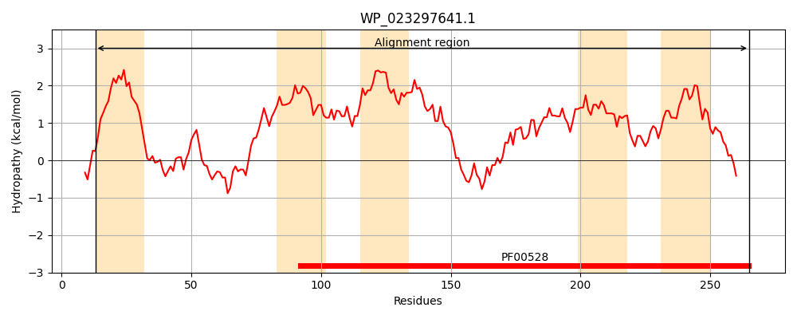
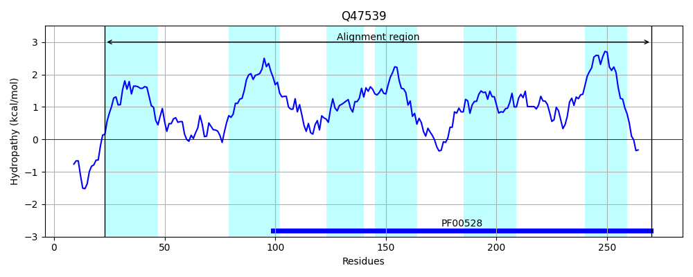
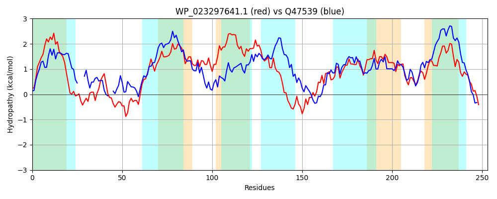

Hit Accession: Q47539
Hit TCID: 3.A.1.17.1
Hit Description: gnl|BL_ORD_ID|13719 gnl|TC-DB|Q47539|3.A.1.17.1 Taurine transport system permease protein tauC - Escherichia coli.
Mach Len: 253
e:0.000000
Query TMS Count : 5
Hit TMS Count: 6
TMS-Overlap Score: 3.300000
Predicted Substrates:CHEBI:9406;taurine
BLAST Alignment:
Score: 336 , Bit scores: 134 bits, E-value: 7.2e-38, Alignment length: 253, Percentage identity: 31
Query: 13 RLTLMLLPFVVLIAAWFIGSAVRLEANPQDKLLPGLSQMVAAIDRMAFTPDKRSGEYLLWADTLISLSRLLTGLAVSSLIGLGIGIAAGVFPMYRAALSPLLTVVSMIPPLAILPVLFIVFGLDELSKVMLIVIGITPMLARDLEQRAKEIPAELFIKAQTLGANSWTLVLRVVLPQLLSRLITSLRLLLGSAWLFLISAEAISATAGLGYRIFLVRRYMAMDVIIPYVIWITLLAWLMDLALRQLHKACFPW 265
++TL + VL+ W+ + ++L + LP Q++ + + + + LW SL+R++ L + L G+ +GIA G+ P R L P++ + +PPLA LP++ I FG+ E SK++LI + I +A K + AQ+LGA+ ++ V+LP L ++T LR+ LG W L++AE I+AT GLG+ + ++A DV++ + I ++A+L++L LR L + PW
Sbjct: 23 QVTLSIGTLAVLLTVWWTVATLQLIS---PLFLPPPQQVLEKL--LTIAGPQGFMDATLWQHLAASLTRIMLALFAAVLFGIPVGIAMGLSPTVRGILDPIIELYRPVPPLAYLPLMVIWFGIGETSKILLIYLAIFAPVAMSALAGVKSVQQVRIRAAQSLGASRAQVLWFVILPGALPEILTGLRIGLGVGWSTLVAAELIAATRGLGFMVQSAGEFLATDVVLAGIAVIAIIAFLLELGLRALQRRLTPW 270 | Protein Hydropathy Plots: |
|---|
|  |  |
Pairwise Alignment-Hydropathy Plot:
|
|---|
|  |